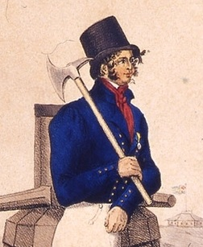

Kristina Israelsdotter.

Född 24 feb 1798 i Igeltorpet, Dyhult Frälsegård, Dyhult, Mogata (E) 4 .
Död 30 apr 1858 i Johannesdal, Knivsätter, Å (E) 5 .
|
Född
24 dec 1805
i Myckelby, Tingstad (E)
1
.
Död 3 apr 1892 i Å Fattighus, Å (E) 2 . |
 |
|
Johan Gabriel Nylin Njugg
Född 24 dec 1805 i Myckelby, Tingstad (E) 1 . Död 3 apr 1892 i Å Fattighus, Å (E) 2 . |
|||
|
Gift
11 nov 1837
i Å (E)
3
.
Kristina Israelsdotter.
Född 24 feb 1798 i Igeltorpet, Dyhult Frälsegård, Dyhult, Mogata (E) 4 . Död 30 apr 1858 i Johannesdal, Knivsätter, Å (E) 5 . |
Framställd 12 aug 2026 med hjälp av Disgen version 2025.